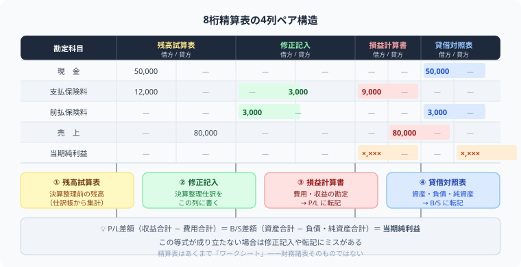

精算表の書き方（8桁精算表）
決算整理から財務諸表まで図解解説
こんにちは、大谷です！実は、初めてあのバカでかい「8桁精算表」を見たとき、横にも縦にも数字がびっしり並んでいて、「試算表？修正記入？P/L？B/S？一体どこに何を書けばいいんだ……！」と、うわっ、なんじゃこりゃ！と本気で脳内がパニックになりました（笑）。
でも実は、この単元の正体は「勘定科目を1つずつ、決まったレーンに横スライドさせて、最後に左右の数字がピタッと一致するかを確認するだけ」のシンプルなパズルゲームだったんです。試算表→修正記入→P/LかB/S、という一直線の流れさえ体に染み込めば、あの巨大な表はもう怖くありません。当時の僕と同じようにパニックになっている皆さんに、この裏技をそのままお届けします！
また、記事の末尾のほうにある【いいねボタン】をポチッと押してもらえると、僕のモチベーション維持のために、めちゃくちゃ嬉しいです！
- 精算表は「試算表→修正記入→P/L→B/S」の8列で構成される決算作業表。財務諸表そのものではなく下書きシート。
- 振り分けの鉄則は1つ——収益・費用→P/L欄、資産・負債・純資産→B/S欄
- P/L差額＝B/S差額＝当期純利益。この2つが一致したら精算表は完成
- 最大の落とし穴は「減価償却累計額のB/S欄」——試算表残高と修正記入の合算を忘れない
📊 ① 8桁精算表の構造——4つの列はそれぞれ何をする？

精算表は左から「勘定科目」＋8列（4ペア）で構成されます。
| 勘定科目 | ①試算表 | ②修正記入 | ③損益計算書 | ④貸借対照表 | ||||
|---|---|---|---|---|---|---|---|---|
| 借方 | 貸方 | 借方 | 貸方 | 借方 | 貸方 | 借方 | 貸方 | |
| 現金 | 200 | 200 | ||||||
| 売掛金 | 300 | 300 | ||||||
| 繰越商品 | 100 | 200 | 100 | 200 | ||||
| 買掛金 | 150 | 150 | ||||||
| 資本金 | 500 | 500 | ||||||
| 売上 | 800 | 800 | ||||||
| 仕入 | 500 | 100 | 200 | 400 | ||||
| 減価償却費 | 50 | 50 | ||||||
| 減価償却累計額 | 100 | 50 | 150 | |||||
| 合計 | 1,100 | 1,100 | 450 | 800 | 700 | 350 | ||
| 当期純利益 | 350 | 350 | ||||||
| 最終合計 | 800 | 800 | 700 | 700 | ||||
※数字は説明用の簡略例です。単位：千円
🗂 ② 勘定科目は「5つの要素」で覚える——P/L列かB/S列かを一瞬で判断する方法
精算表を正確に解くには、各勘定科目がどの要素に属するかを把握していることが大前提です。要素は全部で5つあり、この要素によってP/L欄・B/S欄のどちらに記入するかが決まります。
| 要素 | 精算表の列 | 代表的な勘定科目 |
|---|---|---|
| 資産 | B/S 借方 | 現金、当座預金、売掛金、繰越商品、建物、備品、前払費用、未収収益 など |
| 負債 | B/S 貸方 | 買掛金、借入金、未払金、前受収益、未払費用、貸倒引当金 など |
| 純資産 | B/S 貸方 | 資本金、繰越利益剰余金 など |
| 収益 | P/L 貸方 | 売上、受取利息、受取手数料、雑益 など |
| 費用 | P/L 借方 | 仕入、給料、減価償却費、支払利息、貸倒引当金繰入、雑損 など |
費用・収益はP/L（損益計算書）欄へ、資産・負債・純資産はB/S（貸借対照表）欄へ。
借方・貸方の向きは「通常残高」と同じ方向です（資産→借方、負債・純資産→貸方、費用→借方、収益→貸方）。試算表で各勘定科目の残高がどちら側にあるかを確認する習慣をつけましょう。
❓ なぜ精算表というワークシートを使うのか？——財務諸表を直接修正しない理由
「決算整理仕訳を帳簿に直接記録すればいいのでは？」と思うかもしれません。しかし直接処理すると、修正前後の数字が混ざって確認が困難になります。
・決算整理仕訳を帳簿だけで処理 → 修正漏れや転記ミスが発見しにくい
・修正前後で試算表の数字が変わる → どの数字が修正前でどれが修正後かわからなくなる
・P/LとB/Sの差額が一致しないとき → どこでミスしたかを追跡するのが困難
① 全体が1枚に集約 → 残高T/B→修正記入→P/L・B/Sの全過程が一目で把握できる
② 計算過程が見えてミス発見しやすい → 修正記入欄の借方合計＝貸方合計で整合性チェック
③ 純利益の一致で完成確認 → P/L差額＝B/S差額になれば当期純利益が確定
④ 財務諸表作成の「下書き」として機能 → 精算表が完成すればP/L・B/Sを機械的に作れる
精算表は財務諸表ではなく「作業用メモ」！提出するのはP/LとB/Sだが、その下準備として精算表が大活躍する。
📝 ③ 精算表の作成手順——4ステップで確実に完成させる
決算前の各勘定の残高を「試算表」借方・貸方に記入します。
減価償却費の計上、繰越商品の振替、貸倒引当金の設定、経過勘定の調整など。
収益・費用の勘定 → P/L欄、資産・負債・純資産の勘定 → B/S欄。
P/Lの貸方合計 − 借方合計 ＝ 当期純利益（プラスなら利益、マイナスなら損失）。
左右の合計が一致したら精算表の完成です。
💡 ⑤ P/L差額＝B/S差額＝当期純利益——この等式が成り立つ仕組み
精算表が完成しているかどうかの最終確認は、「P/L欄の差額」と「B/S欄の差額」が一致するかです。この2つは必ず同じ数字（当期純利益）になります。
📄 P/L欄（損益計算書欄）——収益と費用の差が純利益になる
収益合計と費用合計の差額が当期純利益です。差額は費用側（借方）に記入して左右を一致させます。
📊 B/S欄（貸借対照表欄）——資産・負債・純資産の期末残高を確定する
資産合計と（負債＋資本）合計の差額が当期純利益と等しくなります。差額は資本側（貸方）に記入します。
一致しない場合は①修正記入欄の借貸合計がズレている、②P/LとB/Sへの振り分けミスがある、のどちらかです。純損失のときはP/L収益欄・B/S資産欄に記入してバランスを取ります。
🔍 ⑥ B/S（貸借対照表）の間接法表示——減価償却累計額はなぜマイナスで表示するのか
精算表のB/S欄から貸借対照表を作成するとき、減価償却累計額と貸倒引当金は取得原価・売掛金から控除する形式（間接法）で表示します。
例：残高T/Bの累計額1,000円＋修正記入で追加した1,000円＝B/S貸方に2,000円を記入します。修正記入欄の数字だけ（1,000円）を使ってしまうのが最大の落とし穴です。
📋 ⑦ 損益計算書（P/L）の作成——精算表のP/L欄からどうやって転記するか
精算表のP/L欄が完成したら、そのまま損益計算書（P/L）を作成できます。費用・収益を整理し、段階的に利益を計算します。
費用合計 > 収益合計のときは「当期純損失」となり、P/Lの収益側（貸方）に純損失額を記入してバランスを取ります。
💰 ⑧ 貸借対照表（B/S）の繰越利益剰余金——当期純利益はどこに書く？
B/S欄から貸借対照表を作成するとき、繰越利益剰余金は「前期残高 ＋ 当期純利益」で計算します。
左右が必ず一致！減価償却累計額・貸倒引当金は資産から控除表示（間接法）。繰越利益剰余金は「前期残高 ＋ 当期純利益」で計算します。
✏️ ④ 主な決算整理仕訳——修正記入欄に記入する4パターンを完全攻略
精算表で最も重要なのが修正記入欄への決算整理仕訳の転記です。
① 売上原価の計算——三分法では繰越商品を期首・期末で振り替える
仕訳が「仕入／繰越商品」「繰越商品／仕入」の2本立てなのは分かっても、いざ精算表の枠に書き込む段になると、どのマスから埋めればいいか手が止まる人が続出します。僕が本番で毎回やっている、ペンを動かす順番を大谷流に泥臭く公開します。
ステップ1：精算表の「仕入」の行を見つけて、【修正記入・借方】に期首商品の金額を書き込む（これが「し（仕入）くり（繰越商品）」の1本目の左側）。
ステップ2：同じ「仕入」の行の【修正記入・貸方】に期末商品の金額を書き込む（「くり（繰越商品）し（仕入）」の2本目の右側）。
ステップ3：「仕入」の行はこれで完成。試算表の仕入高＋修正記入の借方（期首）－修正記入の貸方（期末）を計算し、その答えを【P/L・借方】にそのまま書き写す（＝売上原価）。
ステップ4：最後に「繰越商品」の行に戻り、試算表の金額－期首＋期末を計算して【B/S・借方】へ書き写す（＝期末商品の残高）。
合言葉は「し・くり、くり・し」——仕入の借方に繰越商品（期首）、繰越商品の借方に仕入（期末）という2本の仕訳を、この順番で機械的にペンで埋めていけば、売上原価のミスはほぼゼロになります。
② 減価償却費の計上——累計額はどの列に書く？
③ 貸倒引当金の設定——差額補充法で修正記入欄への記入は「不足分だけ」
④ 経過勘定の調整——前払・未払・前受・未収を正しい期間に振り替える
収益（売上・受取利息など）→ P/L 貸方
費用（仕入・給料・減価償却費など）→ P/L 借方
資産（現金・売掛金・繰越商品など）→ B/S 借方
負債（買掛金・未払金など）・純資産 → B/S 貸方
① 減価償却累計額のB/S欄：修正記入（1,000）のみ記入→正しくは残高T/B（1,000）＋修正（1,000）＝2,000
② 繰越商品のB/S欄：修正記入欄の数字だけ使う→正しくは残高T/B（100）に修正の±を加減した200が正解
③ 当期純利益を P/L借方に書いてB/S貸方を忘れる→P/LとB/Sの両方に記入必須
④ 当期純利益の入れる列を逆にする（P/L→借方、B/S→貸方が正しい）
📋 まとめ：精算表 早見表
精算表は、勘定科目を正しいレーンにスライドさせて、最後に左右をピタッと一致させるだけのパズルです。この記事が少しでも「あ、そういうことか！」につながったら、僕の執筆のモチベーション維持のために、この下にある【いいねボタン】をポチッと押してもらえると、めちゃくちゃ嬉しいです！